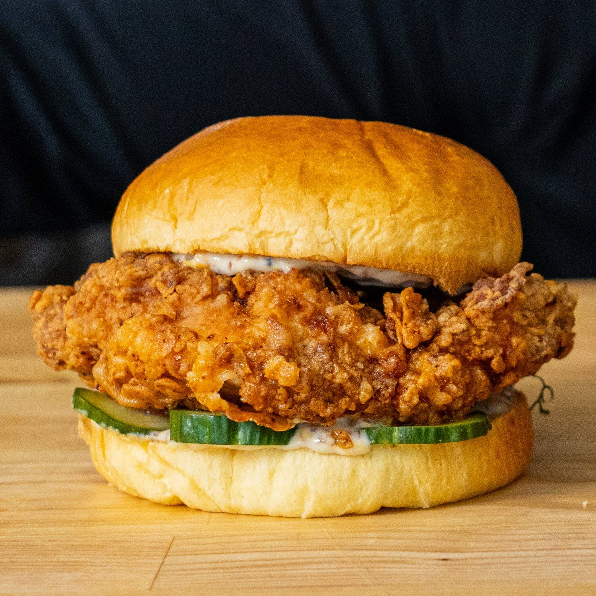

Chicken Sandwhich Recipe

Description
A chicken sandwich is a popular fast food item that consists of a boneless, skinless chicken breast served between two slices of bread or on a
The chicken breast is typically breaded and fried until crispy, then topped with lettuce, tomato, mayonnaise, and other condiments.
Chicken sandwiches are often enjoyed for lunch or dinner and can be customized with different toppings and seasonings.
Ingredients
- 2 boneless, skinless chicken breasts
- 1 cup all-purpose flour
- 1 teaspoon salt
- 1/2 teaspoon black pepper
- 1/2 teaspoon paprika
- 1/4 teaspoon cayenne pepper
- 1/4 teaspoon garlic powder
- 1/4 teaspoon onion powder
- 1/4 teaspoon dried thyme
- 1/4 teaspoon dried basil
- 1/4 teaspoon dried oregano
- 1/2 cup buttermilk
- 1 egg
- 1 tablespoon hot sauce
- 1 cup breadcrumbs
- Vegetable oil for frying
- 4 hamburger buns
- Lettuce, tomato, mayonnaise, and other condiments for serving
Steps
- Pound the chicken breasts to an even thickness and season with salt and pepper.
- In a shallow dish, combine the flour, salt, pepper, paprika, cayenne pepper, garlic powder, onion powder, thyme, basil, and oregano.
- In another shallow dish, whisk together the buttermilk, egg, and hot sauce.
- Dredge the chicken breasts in the seasoned flour, then dip them in the buttermilk mixture, and finally coat them in breadcrumbs.
- Heat the vegetable oil in a large skillet over medium-high heat and fry the chicken breasts for 5-7 minutes per side until golden brown and cooked through.
- Remove the chicken breasts from the skillet and let them rest on a paper towel-lined plate.
- Toast the hamburger buns and assemble the sandwiches with lettuce, tomato, mayonnaise, and other condiments.
- Serve the chicken sandwiches warm and enjoy!